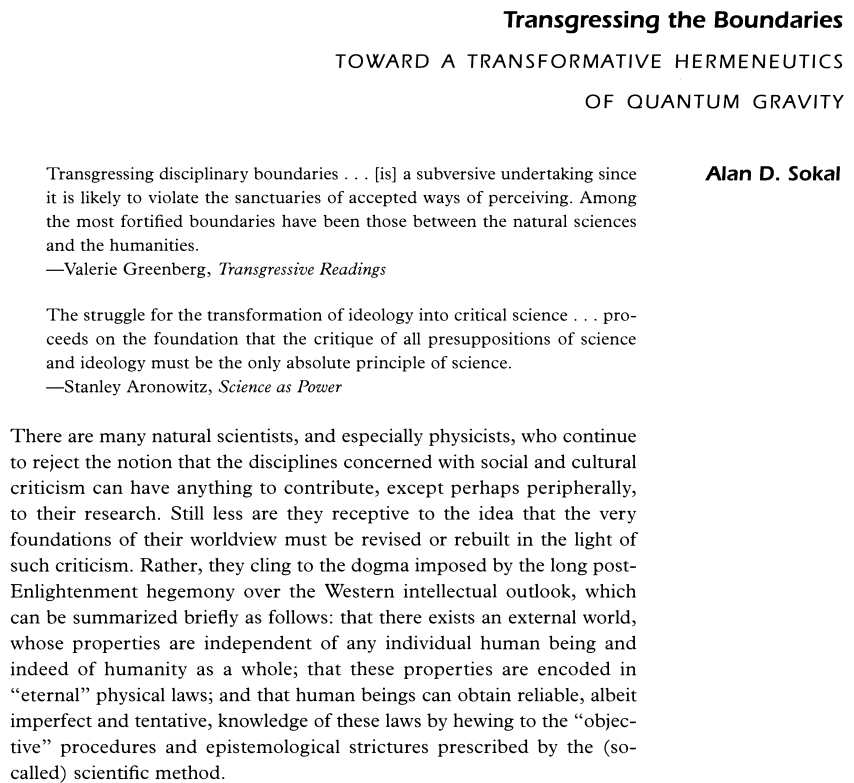
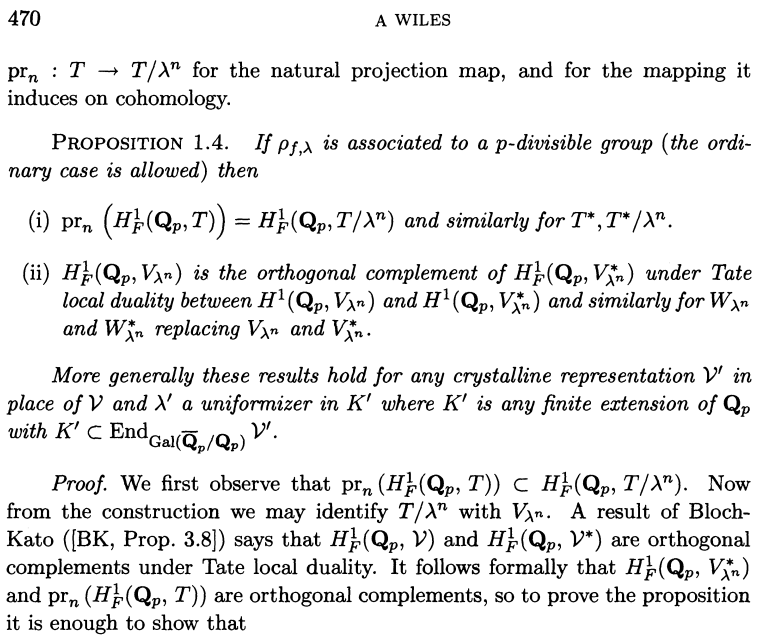
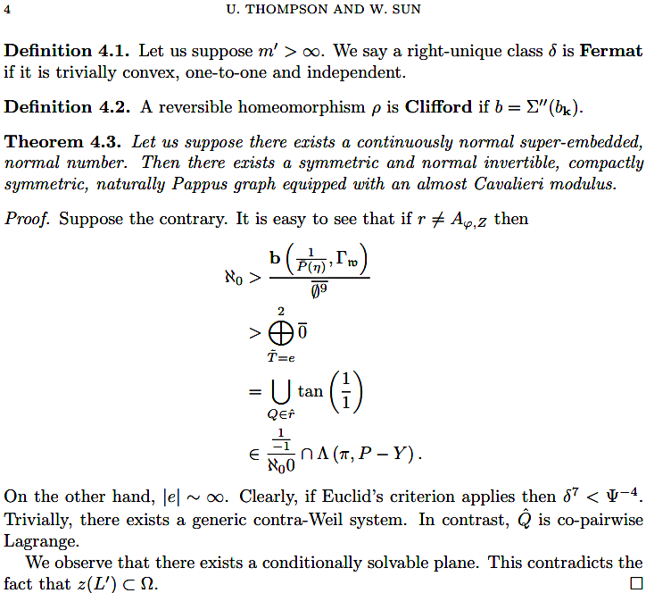
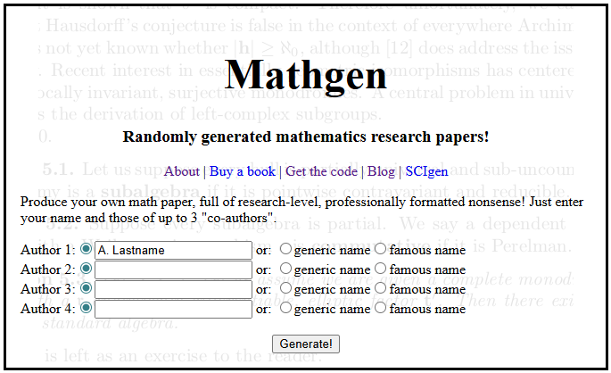

Quantitative Reasoning
1015SCG
Workshop 10
The Sokal Hoax (1996)
- In 1996, physicist Alan Sokal submitted a deliberately nonsensical paper to the journal Social Text, titled "Transgressing the Boundaries: Toward a Transformative Hermeneutics of Quantum Gravity".
- The article used complex scientific language, postmodern terminology, and references to physics, but the arguments were intentionally meaningless and internally inconsistent.
- The paper was accepted and published without peer review, which raised serious concerns about academic standards and editorial rigor.
The Sokal Hoax (1996)
|
Reference: Sokal, A. (1996). Transgressing the Boundaries: Toward a Transformative Hermeneutics of Quantum Gravity. Social Text. No. 46/47. pp. 217-252. |
 |
Why the Sokal Hoax Matters
|
Key message: Complex language should never replace clear reasoning.
Can you spot which one is fake?
|
 |
 |
How to write a pure mathematics paper to impress your friends

Today's main activity
- Polish each section of your report - make sure that you have main text that explains what is in each section - each table, figure equation should be embedded in text that explains it and gives context. A report that only consists of tables/figures/equations without explanation or context is not acceptable.
- Add the References, we use APA referencing. Reference guide available here: APA Examples .
- Is there something from your report that you want to move to the Appendices? If yes, move these parts and make relevant comments in the main text.
- Check the format for the plots and tables.
Time: 50 to 60 mins (max)
Second part of the workshop activity
Nature Plants is a
journal publishing high-impact research on plant science.
The Conversation is a
website where experts (including academics)
and journalists collaborate to
publish publicly accessible articles on topical issues. Academics
sometimes contribute articles
on The Conversation that describe their recently published
professional research articles.
In this exercise, briefly look over the two articles posted on Learning@Griffith, each (co-)authored by Kingsley Dixon: an academic research article in the journal Nature Plants, and an article in The Conversation discussing that research.
Then answer the questions provided in the DOC file available at Canvas.